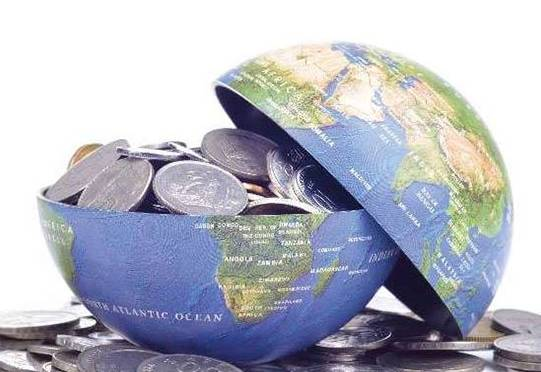
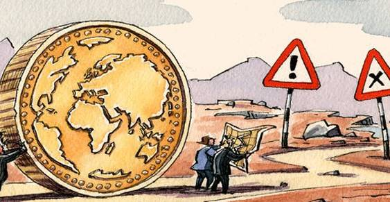

收录于合集
全球经济治理：新挑战与中国路径
〔提要〕全球经济治理正面临新旧动能转换以及规则竞争加剧等复杂而严峻的局面，需要凝聚新共识并激发新的合作动力。以G20杭州峰会为标志，中国已经确立了参与并引领全球治理的新方向，正强化内外统筹、机制建设和智力支撑。未来中国要进一步结合自身发展转型的优先领域和节奏步骤，以G20和地区机制建设同步推进为抓手，促进全球经济治理体系更加包容、有效。
〔关键词〕全球经济治理、G20、中国外交战略
〔作者简介〕陈东晓，上海国际问题研究院院长
叶玉，上海国际问题研究院世界经济研究所副研究员

全球经济治理是全球治理网络的核心部分，也是当前中国参与全球治理的主要领域。2008年全球金融危机以来，世界经济发展面临一系列新问题、新挑战，全球经济治理遭遇前所未有的复杂而严峻的局面。与此同时，中国参与全球经济治理的意愿和能力不断增强，国际社会对中国作用的期待也不断上升。2016年，二十国集团领导人第十一次峰会在杭州落下帷幕，为世界经济如何走出低迷、走向包容与可持续发展描绘了新蓝图，也为中国参与和引领全球经济治理确立了新的历史方向。面对当前严峻的世界经济形势和复杂的全球经济治理格局，中国只有进一步顺势而为，统筹兼顾，才能突破各种制约，在全球经济治理领域中发挥更重要的建设性作用。
01
全球经济“四难”与治理的“四化”挑战
世界经济运转状况可以用四个指标衡量，一是经济增速与效率，二是经济系统安全与稳定，三是社会分配公平，四是环境可持续。当前，全球经济“四难”并存，且呈现相互关联和叠加的局面。
一是经济增长总体乏力。2008年金融危机以来，全球经济复苏态势疲弱，总体在年增幅3%的区间徘徊，全球投资与贸易活动趋缓，危机前全球贸易数倍于GDP增长的态势不再。世界经济复苏乏力源于供需双方共同作用的结果。需求方面，由于收入分配严重不均衡、全球人口增速下降以及人口结构老龄化趋势增强等，全球有效需求不足。供给方面，技术创新缺乏突破性进展，全球金融市场资源配置脱实向虚，抑制了公共基础设施投资和中小企业发展活力。从国别来看，无论是发达国家还是发展中国家，均面临着不同程度的结构性改革瓶颈，制约了全要素生产率的提升。
二是经济体系脆弱不稳定。经济自由化、全球化、网络化和信息化发展到全新阶段，国家间相互依赖不断上升，科技创新在为人们带来更多财富、知识和机会的同时，也加剧了经济系统的脆弱性。第一，全球金融市场自由化进程波动性加大，但金融监管措施仍主要针对事后危机管理，难以有效避免金融危机。美国整体实力虽有所下降，但依然凭借其美元绝对优势地位，从自身利益出发制定货币政策，增加了对全球金融市场的外溢影响。第二，全球中产阶级人数扩大以及互联网等社交媒体的普及，促使个人权利意识普遍觉醒，加之社交媒体舆论场的偏激和无序易引发社会舆论的极化，可能激化社会矛盾甚至引发社会动荡。第三，国际地缘政治矛盾和冲突风险上升，各种宗教极端思潮泛滥，自然灾害、传染病等频发，传统和非传统安全威胁交织，加剧了世界政治安全局势的不稳定，也进一步增加了世界经济体系的不确定性。
三是社会分配不公平问题凸显。“全球议程委员会”发表的全球趋势报告中，收入不平等问题被列为首要关注议题。2013年，全球基尼系数达到0.625。近几十年来，中国、印度等发展中国家通过经济增长，总体上缩小了与发达国家的收入差距，但发展中国家内部的不平等状况不降反升。一系列研究表明，资本主导型的经济增长和全球化将扩大不平等问题，国家间政策协调与国家内部相应政策支持的缺乏，势必导致弱势群体在资本扩张过程中被进一步边缘化。经济增长的收益严重失衡问题如果得不到有效解决，不但会严重制约世界经济有效需求的提升，还会加剧国内保护主义、民粹主义蔓延，甚至引发更大范围的政治与社会冲突。
四是生态环境可持续性堪忧。气候变化是一个公认的全球性问题，不仅对世界经济可持续发展构成重大风险，也已经被各国作为一个安全议题置于内政外交的前列。尤其对于众多发展中国家而言，空气、水体、土壤污染等环境挑战，不仅对本国国民的生命健康构成直接威胁，也危害了社会经济可持续发展的基础。2015年底巴黎全球气候峰会提醒我们，气候变化威胁已经迫在眉睫，国际社会必须立即采取有效集体行动。
世界经济之所以呈现上述“四难”并存的格局，与全球治理体系转型发展的不适应性和供给不足密切相关，全球经济治理正面临四个方面的挑战。
第一，领导力量分化，新老领导力量交替仍处于过渡期。新兴经济体势力的相继崛起，利益攸关方数量显著增加，改变了原来的经济治理体系力量格局。近年来，新兴经济体经济增速放缓、内部出现分化的总体态势，又使得未来新老力量发展格局与前景尚不明朗。未来领导全球经济治理的力量模式将取决于传统领导力量与新兴领导力量之间的博弈互动关系，而新老力量在全球经济治理中的互动模式仍未定型，是取代式、互补式，还是并行式尚未有定论。在领导力量分化和不明朗的背景下，全球经济治理的公共产品供应不足问题将更加突出。
第二，治理理念和价值多元化，全球治理话语权竞争加剧。新自由主义治理理念的主导和正统地位正不断受到挑战和动摇，以新兴经济体为代表的多元发展道路日益受到国际社会的关注、理解和肯定，但远没有形成主流，例如国际社会关于中国模式的论争。全球经济治理理念和价值多元化，导致相关规则的制定权、解释权、执行权等治理规则话语权竞争日趋激烈。如何增进多元的治理理念和价值相互借鉴，取长补短，塑造全球经济治理价值“和而不同”的面貌，为全球经济治理凝聚新共识，避免价值对立甚至文化冲突，其意义更加凸显。
第三，治理机制碎片化，暴露了现行治理机制在代表性、有效性方面的双重缺陷。区域型、次区域型、跨区域型治理，以及双边贸易投资协定和谈判正在取代以世界贸易组织（WTO）为主渠道的全球多边经贸体制，不断割裂世界市场的整体性。如何加强沟通和利益协调，构建高效、完整的经济治理机制，成为国际社会克服市场机制失败的重要环节。
第四，国内治理国际化。在高度相互依存的全球经济中，各大经济体的国内政策“溢出”和“溢回”效应进一步增强，管理和协调上述效应的任务更加紧迫。相应的，各经济体如何通过自身改革和转型，强化适应外部世界经济变化冲击，加强自身治理机制的韧性，成为检验各经济体国内治理成效的重要指标。尤其在当今逆全球化势头升温，各种经济民族主义、民粹主义和保护主义潮流渐趋盛行的背景下，如何协调好国内国际两个方面的治理关系，成为各国政府面临的紧迫任务。
02
中国参与全球经济治理的新机遇和新动力
当前，美欧等西方发达经济体的经济民粹主义和民族主义强势抬头，全球化的传统推力反转为阻力。新兴经济体在全球治理舞台上地位提升的同时，也面临着国内发展结构性矛盾增大、增长势头减弱、群体内部发展分化等压力。尽管代表着20世纪全球化的传统贸易额连年下滑，但信息、观念、数据、创新的全球扩散速度和广度正在加速推进。2016年3月，麦肯锡全球研究所发布的《数据全球化：新时期的全球流动》报告指出，“这个世界变得比以往任何时候都更加紧密”。因此，时下全球化的低潮和盘整绝非全球化的终结，而是处在一个新旧转化的关键时期，需要确立新的方向，凝聚新的动力。当前，中国正启动新一轮全面改革开放的历史进程，处于现代化发展崛起进程中，更离不开全球体系的支撑。适逢全球化新旧转化之际，中国也需要在全球经济治理舞台上确立新的历史方向，寻找新的历史机遇和发展动力。
（一）新的意愿和共识基础
新时期中国实施中国特色大国外交，带来其对全球经济治理的更积极参与和对全球公共产品的更多贡献。2016年中国担任G20峰会主办国，更加积极主动地参与全球经济治理议程设置，把这一进程推向新的高点。
从战略定位上看，全球治理已经被置于中国特色大国外交战略布局的前沿和中心位置。“为人类不断做出新的更大的贡献，是中国共产党和中国人民早就作出的庄严承诺。”习近平主席提出“坚持以推进全球治理作为和平发展的基本要求”，把“高举和平发展的旗帜，积极参与和推进国际秩序变革和全球治理进程”置于中国特色大国外交的前沿。这些论述与世纪之初关于“多边是舞台”的定位相比较，说明全面参与全球治理已经成为当前中国外交战略的基石和核心内容之一。
从外交的中心任务上看，中方日益重视国内改革和全球治理相互对接，相互强化，努力达成良性互动。中国政府坚持以对外开放作为和平发展的重要路径，提出“构建开放型经济新体制”。从设立上海自贸实验区，全国范围内自贸试验区建设再提速，到提出“一带一路”倡议，大力推动跨区域和多边贸易投资协议谈判等，都体现了中方继续强化与外部世界联系纽带、深化利益交融和依存格局的战略意愿。中国制定的中长期发展规划与联合国《2030年可持续发展议程》对接，推动达成《巴黎协定》，也是中国政府推动全球发展共识进一步在国内主流化，从而倒逼国内改革的战略性举措。
（二）新的机制和平台保障
如果说2001年中国加入世贸组织，深度融入全球化进程，到如今成为世界第一大贸易国、第一大外资吸收国、第二大外资输出国，是中国积极参与全球经济治理的利益结构基础，那么以G20为代表的更具包容性的全球经济治理平台的演进，则是推动中国更建设性地贡献全球公共产品的制度激励。从20世纪末对G7/G8峰会的怀疑和疏远，到2003年开始做客G8峰会，2008年底以来成为G20峰会一员，再到2016年主办和引领G20峰会，中国与全球经济治理的关系完成了由客人到主人的地位、身份和心理的转变。2008年金融危机后，正是在G20的推动下，中国成为国际货币基金组织与世界银行的第三大股东国，更多的中国籍专家加入国际经济组织高管行列，使中国有机会在全球经济治理中发挥更大作用。更为重要的是，在全球性金融机构改革步伐缓慢、对全球发展需求难以应对的背景下，中国倡议和支持成立了亚洲基础设施投资银行和金砖国家新开发银行，为中国在全球经济治理体系中发挥更大作用提供了新的平台。中、美、日在世界银行与亚洲开发银行中拥有的投票权总量分别为5.3%、14.1%与10.0%，中国明显居于弱势，但如果将AIIB投票权计入重新计算总投票权，三国比重则为9.6%、11.2%和7.9%，中国代表权总量超过日本跃居第二，且与美国差距大幅收窄。[1]旧机制的改革与新机构的设立，在一定程度上缓解了全球经济治理的合法性赤字，为中国更主动积极地贡献全球公共产品提供了极大的激励和保障。
（三）新的资源和智力支撑
中国成为世界经济体系越来越重要的变量，其自身保持平稳转型和持续发展，便是对世界经济稳定发展的巨大贡献，也是全球化体系得以持续发展的重要引擎。就其外部贡献而言，中国正努力从全球治理的资源、理念、方案等各个方面，成为全球治理进程的重要贡献者。近年来，中国对联合国发展体系、世界银行、亚洲开发银行等国际机构的资金捐助大幅增长。十八大以来，中国政府提出共建人类命运共同体这一包容性愿景，丰富了以合作共赢为核心的新型国际关系理念，倡导共商、共建、共享的全球治理原则和路径，并以“一带一路”倡议的落实为契机，提供更多推动国际发展合作的公共产品。
G20杭州峰会围绕“构建创新、活力、联动、包容的世界经济”这一主题，就创新增长方式、完善全球经济金融治理、促进国际贸易与投资、推动包容、联动式发展等议题，达成了一份公报和28份成果文件，结合国内转型发展，积极塑造世界经济长期可持续发展议程，推动G20由危机应对向长效治理转型。中国“首次全面阐释自己的全球经济治理观，首次把创新作为核心成果，首次把发展议题置于全球宏观政策协调的突出位置，首次形成全球多边投资规则框架，首次发布气候变化问题主席声明，首次把绿色金融列入G20议程”。
同时，中国经济进入“新常态”，面临着经济增速换挡、结构调整、新旧动能转换等多重挑战。中国在经济上深度融入了全球化，但相应的军事安全保障能力远未跟进；货物贸易总量虽为全球之冠，但货币金融部门仍然相对较弱；中国虽位居全球制造业中心，但科技创新仍严重不足，遭受发展中国家低成本竞争和发达国家核心要素控制的双重阻击。中国这种总量优势与结构弱势并存的格局，意味着其参与全球经济治理仍然需要保持自身能力与战略意愿的统一和平衡，坚持国内发展前提下的国际义务和贡献，防止自我认知膨胀和战略资源透支。
03 建设性参与全球经济治理的重点与路径
中国作为发展中大国，参与全球经济治理要基于满足自身发展需求和促进全球经济合作的双重利益，实行内外双赢的战略。这就要求中国结合自身发展转型的优先领域和节奏步骤，规划参与全球经济治理的相应战略，以G20和地区机制建设同步推进为抓手，促进全球经济治理体系更加包容、有效。
（一）推进全球治理与国家治理联动
国内治理为国际治理奠定基础、提供动力，二者是相互联系、影响以及相互转化和促进的过程。当前全球经济治理过程的一个显著现象是，处于核心和领导地位国家的国内改革创新成果越多，成效越大，越有机会和能力将创新改革的原则、理念甚至方案在全球议程中推广。中国之所以能在G20杭州峰会提供大量中国方案，关键在于自身全面深化改革进程与G20各项议程的相互契合，才使得中国具备了更大程度的底气和自信来推进相关讨论和政策协调进程。在分析中国参与全球治理的战略考量时，有中国学者提出了“整体性治理”概念，即全球治理与国家治理相辅相成，内在统一，中国作为一个大国应该借助全球治理深化国家治理，同时依托国家治理推进全球治理。
中国参与乃至引领全球治理的实 践不断证明，中国需要进一步深化国 内各项改革，才能带动其在相关全球 性议题中的议程设置能力和影响力。 这是未来中国成为全球治理领导者力 量和信心的重要源泉。
为此，中国一方面要继续在国际多边议程中推进中国化的可持续发展理念，凝聚新共识的着力点。另一方面，中国更要将国内改革转型的新实践加以理论化，在特殊案例中寻找普遍意义，为中国实践的世界意义提供理论规划的支撑，提高中国实践在全球经济治理中的影响力。在这方面，近年来中国更多借力重要国际经济组织等多边机构，有效利用其数据分析与研究能力，将中国方案更有效地转化为全球议程。中国在担任G20主席国期间，与主要国际经济组织开展合作已成为一大亮点，例如邀请世界银行、非洲开发银行等10家多边开发银行，共同发表关于支持基础设施投资的共同宣言；发起全球基础设施互联互通联盟,指定世界银行为秘书处，既提升了相关倡议的合法性，间接支撑“一带一路”倡议，又使G20正式认可了两家新多边机构的积极意义。今后，中国应继续强化与这些重要国际经济组织的合作，借用其强大的研究能力推动在一些重大议题，如G20杭州峰会核准的《深化结构改革议程》尽快形成统一的标准、指标体系和落实方案。
此外，中国亦需要对全球经济治理中现有的重大议程、重要机制进行通盘和整体性规划，发挥相互对接、相互补充和相互强化的效应。例如，当前推动《2030年可持续发展议程》落实是全球治理的中心议题之一，中国应将G20杭州峰会成果、金砖合作机制、中非合作论坛约翰内斯堡峰会成果、中国和东盟合作、中国—中东欧合作、中国和拉美合作等做整体规划，以“多元联动”的思维提高中国在2030年议程落实中的积极贡献。这种联动思维、整体规划能够最大限度地发挥全球倡议和地区、国别合作的对接与延伸效应，并为创新南南合作、推动中国对全球治理提供更多有效公共产品创造机遇。
( 二）推进更坚实有效的地区机制
全球经济治理体系是对全球性经济议题的治理，但其参与者是多层级的，从国家、次地区、地区治理再到全球性治理，是一个金字塔式结构。值得注意的是，全球经济治理体系应遵循所谓的“辅助性原则”，即只有当下级机制不能有效提供某种公共产品时，上级机制才需要介入。从这个意义上讲，应尽可能地让全球治理机制“下沉”，类似G20这样的全球层面机制，应主要关注世界经济发展的全局性和战略性议题，具体的治理问题应由国别、次地区和地区层面机制承担。
对于地区化的勃兴，我们不必一 概视为洪水猛兽，关键是地区化建设 要真正坚实有效，与全球化发展大方 向相一致。
国际贸易体系发展的历史亦证明了地区化促进全球化的可能性。在国际格局多极化背景下，新旧大国博弈与全球供应链发展带来新一轮地区化重组与勃兴，应被视为全球化发展的新机遇。作为世界第二大经济体，中国应是这一进程的重要推动力，并与传统大国更好地进行战略协调，确保新旧体系之间的良性竞争和有效补充。第一，切实做好“一带一路”倡议的落实，确保AIIB与NDB成功运营，推动亚洲周边地区的更好发展。AIIB致力于促进“亚洲经济可持续发展、创造财富并改善基础设施互联互通”、“推进区域合作和伙伴关系”，它的成立标志着全球范围内地区化博弈的重心全面转向亚太，且进入贸易、金融、发展各议题交叉联动的新阶段，它的开放性结构使其与现有机构形成了很好的补充与互动，在开业之前便赢得了国际社会的广泛认可，是中国以地区化建设推动全球经济治理的范例。第二，在货币领域切实推进地区机制的有效性建设，为全球金融体系建设添砖加瓦。例如，清迈倡议多边化机制和金砖国家应急储备安排机制，是以IMF为中心的全球应急融资体系的重要补充。中国应在推动和提升这些机制的效能方面扮演更重要角色。G20杭州峰会期间，中国推动IMF与CMIM的联合演练即是一个有益的实践。[1]第三，推进地区贸易体系建设。当前跨太平洋伙伴关系协定前途未卜，为中国推动亚太地区贸易一体化建设提供了新的机遇。即便推动区域全面经济伙伴关系或亚太自贸区遭遇困难，中国也可效仿CMIM经验，先推动东盟与中日韩（10+3）框架下的贸易规则体系多边化。如果能做到这一点，便是对东亚地区乃至全球贸易体系的重要贡献。
（三）加强 G20机制实效和宏观政策协调
G20是国际经济合作和全球经济治理的首要平台，其在防风险、提效率、促公平等系统性和全局性问题上，尤其是在加强各大经济体领导人之间的战略沟通和信任建设方面发挥日益重要的作用。作为G20中重要的新兴经济体代表，中国在国际货币金融、贸易投资、发展等各领域均具有重要影响，也是未来国际体系变迁最主要的变量之一，备受国际社会关注。中国主办G20杭州峰会，为大国协调共同推进全球经济治理提供了新的着力点和中长期方案。然而，世界经济的结构性问题等“慢性病”需要标本兼治，绝非毕其功于一役所能实现。在后杭州峰会时代，中国应继续利用其在G20“三驾马车”中的地位和世界第二大经济体的影响，推动相关成果落实，确保G20机制的实效。
G20杭州峰会的成效乃至该机制未来的发展，核心在于增强化共识为行动的能力。由于G20不具备约束性，杭州峰会所达成的创新增长蓝图、深化结构性改革议程、落实2030年可持续发展议程行动计划以及关于全球投资、绿色金融、能效、可再生能源指导原则和行动计划等成果，大多为建议、倡议性质。这些原则性共识背后仍存在巨大的利益分歧和立场冲突，需要后续的对话、谈判加以落实。为此，我们需要进一步推进相关议题的工作机制。例如，在杭州峰会期间，创新增长议题分别由科技部、工信部、网信办等牵头，经合组织等国际组织协助，但尚未成立专门的工作组加以跟进。《杭州峰会公报》第11条规定，将设立一个专题项目组，在OECD等组织支持下，进一步推动G20创新、新工业革命和数字经济议程，且讨论内容要“符合未来G20主席国的优先工作方向”。对此，中方应加强与G20成员，包括后续主席国的协调，共同推进相关规定，确保后续落实。
中国能对G20等全球经济治理机制发挥多大的影响力和协调力，根本在于自身发展以及发挥示范引领作用的能力。因此，中国要切实推进结构性改革和发展方式转型，力补货币、金融领域与高端制造业短板，提升在全球价值链中的地位，赢得新的国际竞争优势，实现可持续发展，这是中国提升对国际议程和规则影响的根本。同时，中国应进一步开放服务贸易市场和外资准入条件，提升对全球公共产品的资金和智力贡献，软硬实力配合，推动贸易、投资、金融、气候、能源等各领域系统性全球性问题的解决。如中方可充分利用国内电子商务市场规模和快速发展优势，掌握全球电子商务贸易规则制定的主导权。总之，中国可依托国内自身产业和创新优势，积极推动相关领域国际规则的讨论和制定，推动中国优势产业的实践和惯例进一步制度化。

04 结 语
全球经济治理正面临新旧动能转换以及规则竞争加剧等复杂而严峻的局面，需要凝聚新共识并激发新的合作动力。中国的进一步发展需要依托开放包容的全球体系，亦将为全球化发展提供新机遇和新动力。以主办G20杭州峰会为标志，中国已经确立了全面参与全球经济治理的新方向，下一步应着力推进全球治理与国家治理联动、建设更加坚实有效的地区机制等方面，加强G20实效性，促进全球经济治理体系更加包容、有效。
声 明
国政学人微信公众平台系非盈利学术平台。文章出自最新的南大CSSCI和北大中文核心来源期刊为。目的是方便广大学人进行学术研究，促进学术的传播和交流，不做任何商业用途。如有任何权利问题，请直接与我们联系。